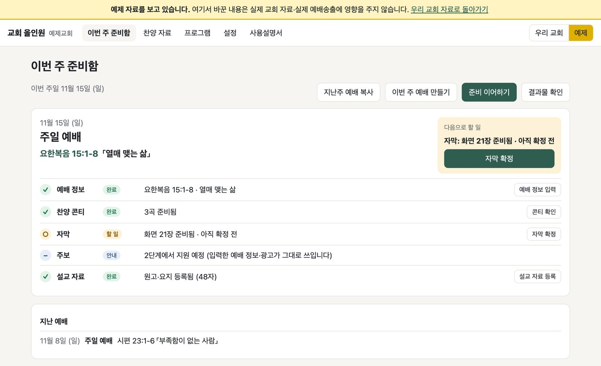
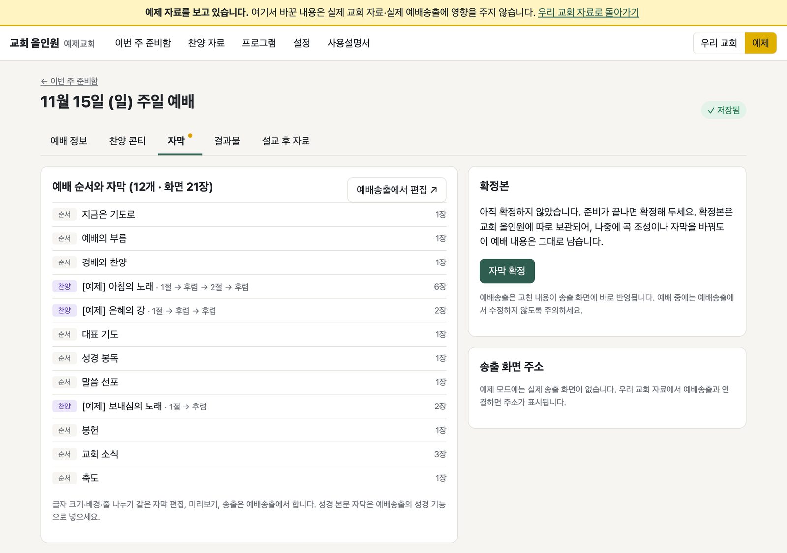
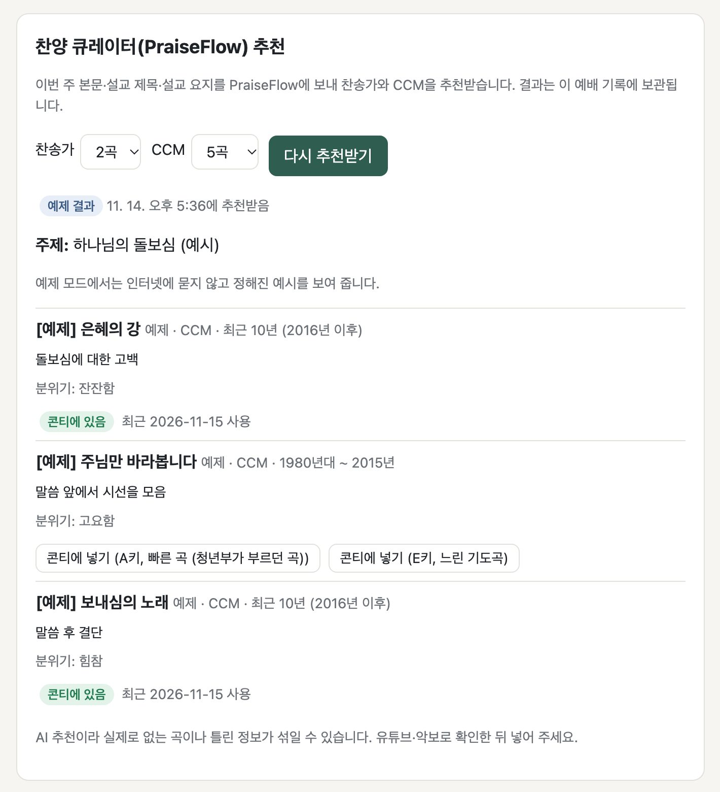
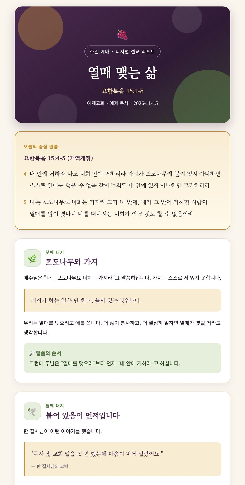
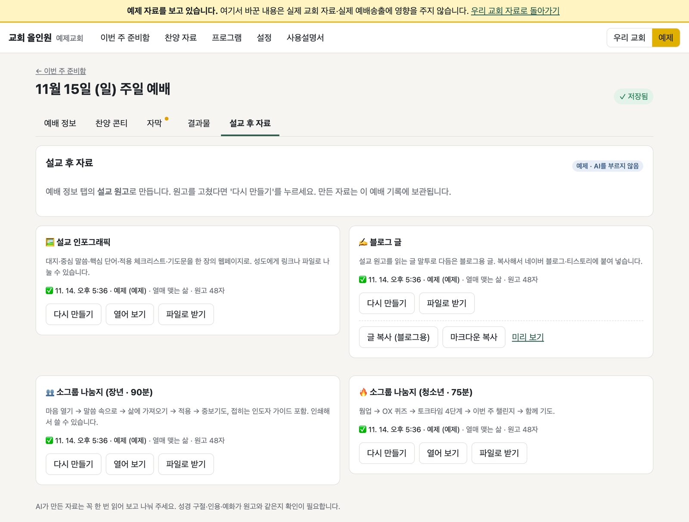
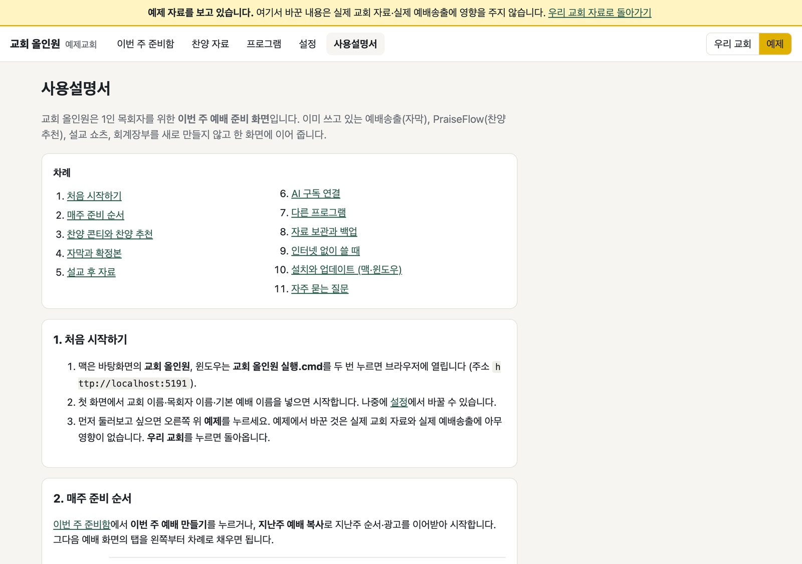

혼자 목회해도,
매주 준비를 혼자 다 하지 않도록
본문과 설교 제목을 한 번만 넣으면 예배 자막, 찬양 콘티, 설교 인포그래픽, 블로그 글, 소그룹 나눔지까지 이어집니다. 작은 교회를 위해 만든 무료 프로그램입니다.

한 번 입력하면, 이어집니다
같은 본문과 제목을 다섯 군데에 따로 적지 않아도 됩니다.

🎵 찬양 콘티
곡을 넣고 순서·조성·곡 구성(1절 → 후렴)을 정합니다. 카톡용 콘티 글 복사와 인쇄도 됩니다.

📺 자막 확정
예배 직전 모습을 그대로 보관합니다. 나중에 곡이 바뀌어도 그 주 예배는 남고, 되돌릴 수 있습니다.

찬양 추천까지
함께 들어 있는 PraiseFlow 찬양 큐레이터가 본문과 설교 제목을 읽고 찬송가와 CCM을 추천합니다.
- 곡마다 추천 이유·분위기·유튜브·악보 링크
- 찬양 자료에 있는 곡은 콘티에 넣기 한 번
- 없는 곡은 새 곡으로 만들어 넣기 (가사는 예배송출에서)
설교가 끝난 뒤에도
설교 원고 하나로 성도와 나눌 자료를 만듭니다. 아래는 예시 원고로 실제로 만든 결과입니다.

🖼 설교 인포그래픽
대지·중심 말씀·핵심 단어·적용 체크리스트·기도문을 한 장의 웹페이지로. 링크나 파일로 나눕니다.

👥 소그룹 나눔지
장년(90분)·청소년(75분) 두 가지. 질문, 중보기도 표, 접히는 인도자 가이드. 인쇄하면 A4로.

✍️ 블로그 글
강단 말투를 읽는 글로 다듬어 줍니다. 글 복사로 네이버 블로그·티스토리에 붙여 넣으면 끝.
할 수 있는 것
이미 쓰고 계신 프로그램을 새로 만들지 않고 한 화면에 이어 줍니다.
- 📋 이번 주 준비함할 일이 순서대로, '준비 이어하기' 한 번이면 남은 곳으로
- 🔁 지난주 예배 복사예배 순서와 광고를 이어받아 시작
- 📺 예배송출 자막 연결성경 봉독·말씀 선포·교회 소식·대표 기도 자막에 자동 반영
- 🎵 찬양 콘티·추천조성·곡 구성·흐름 메모, AI 찬양 추천, 카톡용 글 복사·인쇄
- 🗂 자막 확정본그 주 예배 모습 보관, 바뀐 곳 알림, 되돌리기
- 🖼 설교 후 자료설교 인포그래픽, 블로그 글, 소그룹 나눔지(장년·청소년)
- 👀 예제로 먼저 둘러보기예제에서 바꾼 것은 실제 교회 자료에 영향 없음
- 💾 자동 백업매일 자동 백업, 14일 보관. 자료는 이 컴퓨터 안에만
- 📘 사용설명서프로그램 안에 화면 사진과 함께
- 🔒 인터넷 없어도준비·콘티·자막 확정은 인터넷 없이 (AI 기능만 인터넷 필요)

AI는 API 키 없이추가 요금 없음
찬양 추천과 설교 후 자료는 이미 쓰고 계신 Claude나 ChatGPT 구독으로 만듭니다.
- Claude 구독: Claude Code를 설치하고 로그인
- ChatGPT 구독: Codex를 설치하고 로그인
- 찬양 추천은 Gemini API 키로도 됩니다
AI 없이도 예배 정보·콘티·자막 확정은 그대로 쓸 수 있습니다.
설치 방법
처음 한 번만 경고 창이 나옵니다. 유료 인증을 받지 않은 무료 프로그램이라 나오는 안내입니다. 예배송출과 PraiseFlow가 함께 들어 있습니다.
🍎 맥
- 위의 맥용 받기를 누르고, 받은 zip 파일을 두 번 눌러 압축을 풉니다.
- 설치하기.command를 마우스 오른쪽 버튼 → 열기로 실행합니다.
- "확인되지 않은 개발자" 창이 뜨면 다시 [열기].
- 몇 분 뒤 바탕화면에 교회 올인원이 생기고 열립니다. (인터넷 필요, 관리자 암호 불필요)
🪟 윈도우
- 위의 윈도우용 받기를 누르고, 받은 zip 파일을 오른쪽 클릭 → 모두 압축 풀기.
- '교회 올인원' 폴더를 문서 폴더 같은 곳에 둡니다.
- 교회 올인원 실행.cmd를 두 번 누릅니다. 설치 과정 없이 바로 열립니다.
- "Windows의 PC 보호" 창이 뜨면 [추가 정보] → [실행].
새 버전은 같은 방법으로 받아 바꾸면 됩니다. 입력한 교회 자료는 그대로 남습니다.
알아 두실 점
🤖 AI가 만든 자료는 한 번 읽어 주세요
원고에 없는 구절이나 예화는 쓰지 않도록 했지만, 성경 구절·인용이 원고와 같은지 나누기 전에 꼭 확인해 주세요. 찬양 추천도 실제 곡인지 유튜브·악보로 확인한 뒤 넣어 주세요.
🙏 첫 공개(베타)입니다
쓰시다가 안 되는 것이 있거나 바라는 기능이 있으면 알려 주세요. 작은 교회에서 실제로 쓰시는 이야기가 가장 큰 도움이 됩니다.
🤝 교회 올인원은 자율 후원으로 운영됩니다
후원은 부담을 갖지 않으셔도 됩니다. 무료로 사용하셔도 괜찮습니다.